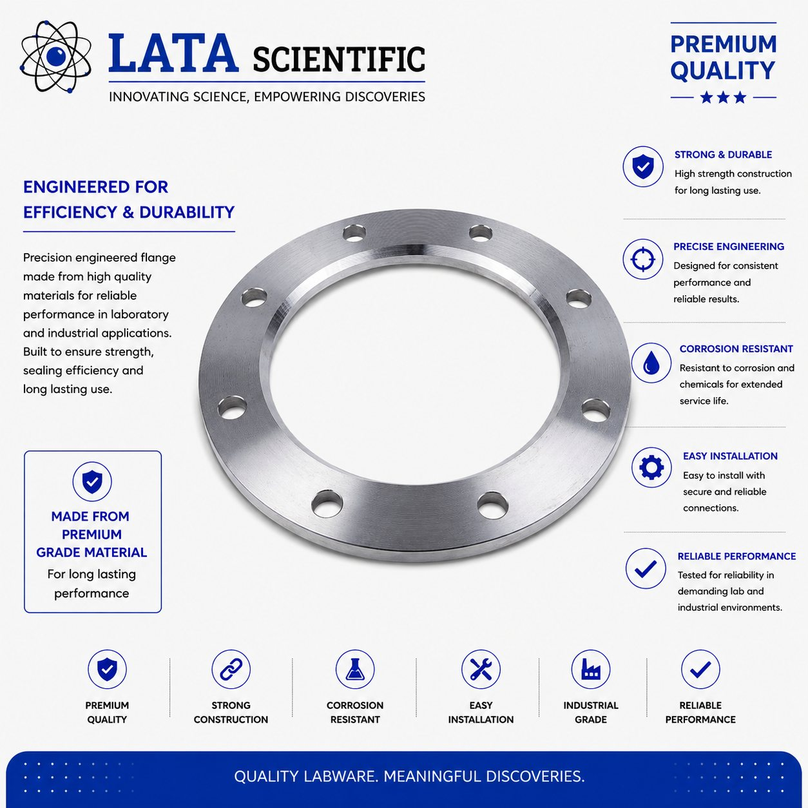
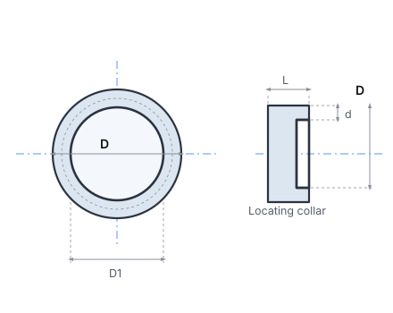
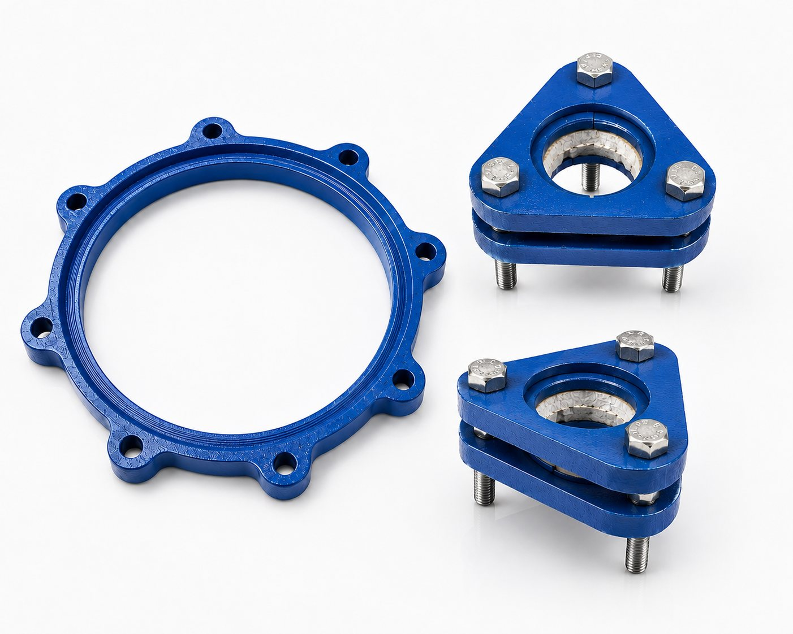
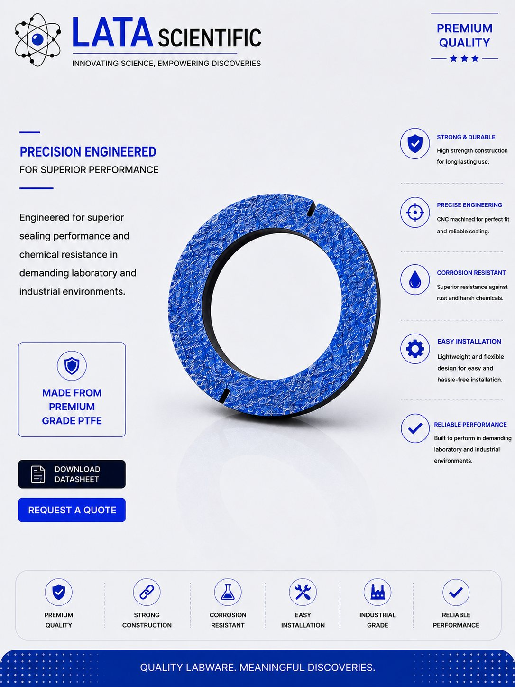

Flanges, Inserts & Adaptors


LSTR series, DN 15 to DN 600
PTFE gasket made specifically for glass fittings, with an integral collar that locates it correctly on the glass end — DN 15 to DN 600.
| Product type | PTFE “O” ring gasket with locating collar |
|---|---|
| Material | PTFE |
| Nominal bore range | DN 15 to DN 600 |
| Section (d) | 3 mm to 8 mm depending on bore |
| Collar length (L) | 5 mm to 10 mm depending on bore |
| Function | Gasket for glass fittings; collar locates it on the glass end |
| Catalogue reference | LSTR series |
Product overview
This PTFE “O” ring is specifically made to use as a gasket in glass fittings. It is the sealing element of a bolted glass joint, sitting between the two glass ends while the backing flanges and inserts carry the bolt load.
What separates it from a plain gasket is the collar. It is provided with a collar which helps to locate it on the glass end correctly — the gasket cannot creep off centre while the joint is being drawn up, which is exactly when a plain flat gasket tends to move and end up sealing on one side only.
Section thickness d steps from 3 mm on the small bores to 8 mm at DN 600, and collar length L from 5 mm to 10 mm, so the gasket stays in proportion to the bead it locates on.
Features
Benefits
Applications & industries
Technical data
Figures below are for this product only — every item in the range carries its own dimension table.
| Product type | PTFE “O” ring gasket with locating collar |
|---|---|
| Material | PTFE |
| Nominal bore range | DN 15 to DN 600 |
| Section (d) | 3 mm to 8 mm depending on bore |
| Collar length (L) | 5 mm to 10 mm depending on bore |
| Function | Gasket for glass fittings; collar locates it on the glass end |
| Catalogue reference | LSTR series |
| Cat. Ref. | DN | D | D1 | d | L |
|---|---|---|---|---|---|
| LSTR 07 | 15 | 29 | 23 | 3 | 5 |
| LSTR 1 | 25 | 42 | 33 | 3 | 5 |
| LSTR 1.5 | 40 | 57 | 48 | 3 | 5 |
| LSTR 2 | 50 | 70 | 59 | 3 | 5 |
| LSTR 3 | 80 | 100 | 88 | 3 | 5 |
| LSTR 4 | 100 | 134 | 119 | 4 | 6 |
| LSTR 6 | 150 | 186 | 168 | 4 | 6 |
| LSTR 9 | 225 | 260 | 236 | 4 | 7 |
| LSTR 12 | 300 | 342 | 318 | 4 | 7 |
| LSTR 16 | 400 | 467 | 435 | 6 | 7 |
| LSTR 18 | 450 | 537 | 490 | 6 | 7 |
| LSTR 24 | 600 | 686 | 640 | 8 | 10 |
All dimensions in mm, transcribed exactly from the catalogue page. d is the ring section and L the collar length.
FAQ
It locates the gasket on the glass end correctly. Without it a flat gasket can shift while the flanges are being drawn up and end up sealing unevenly; the collar holds it concentric.
No. Where a bellow is used, no gasket is required — the bellow face seals against the glass end itself.
It is inert to almost all process media, so the gasket does not contaminate the batch or degrade in aggressive service — the same reason PTFE is used for the bellows and the spindles elsewhere in the range.
Related products




Enquiry
Send the bore, the media, the temperature and pressure, and the flange standard you work to. Drawings and custom sizes welcome.
Send your requirement — media, temperature, pressure, dimensions — and we'll recommend the right product or fabricate it.
Talk to an engineer